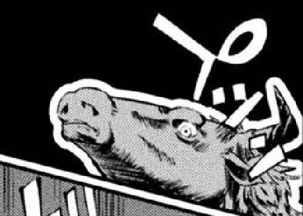

Minotaur
No. 1
Where's yours anon?
Where's yours anon?
- MC List
- FotM/Hall of Fame and Infamy
- Absurd/Edge
- Revenge
- Otome(Many villainess)
- Categorized Otome
- Cultivation
- Dochaku Isekai
- Kingdom Building
- Dungeon Exploration/Building
- Ise/k/ai
- Cooking
- Gender Bender
- Loli MC
- Completed
- H & Erokai
- Time Travel & MDs
- Sci-fi
- Actual Villains
- Yuri
- Reverse Isekai
- Cursed Isekai
- Blessed adaptations
- Isekai Anime